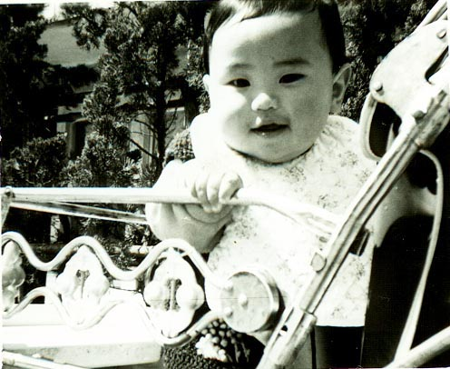

だいぶつのホームページ

自画像（ウン十年前）です。
脳不満足
「１月半も休んで、どこが悪かったの？」
「脳が悪かったんです」
突然の不安発作
昨年１２月、僕は急にわけのわからない不安感に襲われました。
不安感を意識すればするほどその不安感は増大し、強烈な恐怖となって襲ってきます。ついには、このまま気が狂うのではないかというまでになりました。後からわかったことなのですが、これが「パニック」(不安発作)です。人によっては非常な動悸や手足の震え、呼吸困難・嘔吐などを伴うことがあるそうです。
その後、無理がたたって会社を一月半も休む羽目になりました。
いったいなんだったんだろう？
インターネットでいろいろ調べたところ、こういう「パニック」を頻繁に起こすのがパニック障害という病気であるということがわかりました。それで、自分はパニック障害に違いないと考えました。しかし、パニック自体は昨年以来まったくといっていいほど起こしてはいないので、どちらかというと全般性不安障害と考えていいと思っています。病院によっては自律神経失調症や不安神経症という診断になったかもしれません。
なお、パニック障害・全般性不安障害・自律神経失調症・不安神経症などについて書き出すと長くなるので、これらの病気について知識のない人はコラム「パニック障害」と「神経症」・「自律神経失調症」を参照してください。
このページの目的
インターネットを利用すれば、さまざまな情報を手にいれることができます。しかし、これらの情報はまったく検閲されていない情報なので、僕と同じような症状に陥ってしまった人が悲観的にならざるを得ないような情報が散在する一方、自律神経失調症やパニック障害をうまく克服できなくて何年も悩んでいる人も多く見かけます。
僕のページでは、僕の経験と調査を通して得られた知識から、これらの症状を克服するためのヒントを提供していきたいと考えています。ただし、これらには多分に僕の主観的な記載が含まれていますので、医学的に正しいかどうかは２の次としていることを最初にお断りしておきます。
さらに、僕はユング心理学をかじっているので、ユング心理学的な面から捉えた考察が含まれています。インターネットを探してみてもこういう考察はあまりないので、正しいかどうかは別として楽しんでもらえるのではないかと思っています。
現在までの経緯
僕は昔から緊張するとおなかの具合が悪くなったり(過敏性大腸症候群)、喉に異物感を感じたり(咽喉頭異常感症)といった症状を抱えていました。こういう症状をひとくくりにして自律神経失調症と呼んだりします。
でもそれなりに調子よくすごしてきたところに、去年の７月末女性と付き合い始めることになりました。自慢にもなりませんが３０歳まで童貞で、女性と付き合ったのはこれがはじめてです。デートのたびに緊張して腹痛に苦しめられました。それでもなんとかごまかしつつすごしてきたところへ、季節の変わり目(秋→冬)のストレスが重なったのが不安発作を招いたのだと自己分析しています。
根が前向きな僕は、それでも無理をして約束をしていた北海道スキー旅行に出かけました。出発までは調子が良かったのですが、行きの飛行機の中でパニックを起こしてしまいました(飛行機はよくなかった)。千歳に着くまでは生きた心地がせず、彼女の前ではなんとか平静を保っていたもののやばそうになったらトイレにこもって「どうしよう、どうしよう・・・」と言っていました。あれは怖かったなー。
いちおう、根性で多少スキーは滑ったけど彼女は気が気じゃなかったことでしょう。さらに「ふん、こんなもの楽勝じゃい！」と自分に言い聞かせて帰りの飛行機に乗って帰ってきました(ちょっと怖かった)。彼女は「電車で帰ろうか？」と言ってくれましたがそういうわけにもいかんし。
その後、たまたま姉の通っていたクリニックに行って安定剤を処方してもらいました。姉がたまたま心療内科に通っていたため、その手の病院に行くのに敷居が低かったのはラッキーだったと思っています。そして、会社も１週間ほど休んだところ、調子が良くなりほとんど発症の前と同じ状態に戻ったのです。ところがそれは小康状態になっていただけでした。「ほとんど治った」と思った私はまたもや無理してスキーに出かけます。今度は自分で車を往復運転して。先生も「スキーくらいなら行っても大丈夫でしょう」って言ったのです。
そして帰ってきた２日後、症状が爆発しました。とにかく落ち着かず、いても立ってもいられず、じっと寝ていることも出来ません。安定剤もほとんど効かず、「薬が効かない」という思いが余計不安を招きます。夜間救急診療で近くの病院に行き安定剤を点滴してもらったのですが、その間は眠れたものの帰ってきたら同じことでその夜は眠れませんでした。
通っていたクリニックに完全に信用を失った私は、次の日別のクリニックを頼って診断を受けに行きました。初診のうえ混んでいたせいもあって５時間も待たされたのですが、そこの先生は前のクリニックと違って自信満々に薬を処方してくれました。おかげで、先生の前に座っただけで、なぜか症状が軽くなったことを覚えています。
それでも１週間ほどは家でへたばるのみの日が続きました。ある日は涙が止まらず、朝から晩まで泣いていた日もあり母を困らせてしまいました。１月末から３月はじめ位まで会社を休みましたが、なんとか回復基調に乗せることができ現在は会社に通っています。薬を飲みながらですが、一週間五日人並みに勤めることができるようにまでなりました。もっとも、昼間は眠く以前とまったく同じレベルで活動できるというわけではありません。会議中に寝て白い目で見られたりしてますが、そこはそれ持ち前のずうずうしさでやり過ごしてます。とゆうか、病気になる前と大して変わらないという説も…。
ま、長くとも２ヶ月以内にはほとんど問題なくなるでしょう。
マイナスの情報に振り回される
病気の期間、それなりに元気だった間、パソコンで「パニック障害」「自律神経失調症」などのキーワードでインターネット上の情報を調べたりしました。すると、なぜか悲観的にならざるを得ないような情報があふれているのです。「自律神経失調症１０年選手です」「パニック障害になって５年目になります」などと自慢げにかかれていたりします。なんじゃそりゃ、といいたくなりますよね。自分は治りたくて治るための情報を探しているのに、そんな５年も１０年も治らないようなことを言われては悲しくなります。
僕自身も最初はろくでもない日々のことを綴ろうかとも思ったのですが、そう言うページはほかにもたくさんあることだし、僕のページではあまり微細に入って書くことはしませんでした。この手の病気じゃない人にとっては面白いだろうけど、あまりためになるものではないと思いますから。僕もいろいろ読んでみてうんざりさせられました。
いろいろな症状の方がおられるのでしょうし、私の症状は軽かったか運がよかったのかもしれません。特に周りの理解や対応という点では、私自身非常に運がよかったと思います。しかし、ＢＢＳなどでよくある「同じような症状の人がいて安心しました」というような意見には私はまったく同意できません。自分の症状を改善するための情報が手に入らなきゃ意味がないのですから。
ＢＢＳの中にたらたらと自分の症状を書き綴っている人や、わざわざホームページを開設してまで自分の不遇を書いている人はどういうつもりなのだろうかと思います。それを目にした人が、どのような気持ちになるのかを考えて書いてほしいものです。少しでも治るための情報が含まれているのであれば別ですが。
いちどＢＢＳでそのような人に対して意見をしたことがあるのですが、「これは私のカタルシスであり、症状を書き綴ることが私の治療なのです」と反論されてしまいました。これにはあきれました。それだったら日記で事足りることですよね。確かに認知療法というような療法があるのは事実で、それは自分のゆがんだ自我を記載して認知することにより治療にと役立てるものです。だったらなおさらそんなものはインターネット上に公開すべきものではありません。
「治らない」と決め付ける人
困ったことに、上記のようなネット上のマイナスな人々には、自分の病気を克服できないと決め付けている人がいます。こうした人はネット的に見てもあまり好ましいとは言えないのですが、なぜそう決め付けるのでしょうか？これについてはコラム「西洋医学の功罪」で記載していますので、ここでは割愛します。。
また、自称「生まれつき自律神経が弱い」さんもネット上にあふれています。ホントに生まれつき自律神経が弱い人はいるそうで、そう言う方は10歳くらいまでにお亡くなりになるそうです。ですから、それ以上生きている人は安心してかまわないと思います。これについての考察をコラム「生まれつき自律神経が弱い？」にまとめてみましたので読んでみてください。
このページを読んでいる方は安心してかまいませんが、これらの病気(というか状態)を克服した人はたくさんいるし、克服するための方法も世界にあふれています。それを彼らは知らない(または、知りたくない)だけなのです。
森田療法との出会い
パニック障害や自律神経失調症と呼ばれている疾患の一部は、神経症という神経質のがひどくなったようなものと考えられています。この辺についての私の考え方はコラム「パニック障害」と「神経症」・「自律神経失調症」で述べたとおりです。
そして、神経症の優れた治療法に「森田療法」と呼ばれるものがあります。単純に説明すると、これらの神経症にかかっている人は不安発作や恐怖症のため、この症状を完全に取り除いてからでないと行動を起こそうとしません。このため、どんどん行動範囲が狭められていき、最終的に怖くて外出できない(ひどい人ではトイレにも行けない)ということになります。
森田療法は「あるがまま」と基本とします。不安は不安のあるがまま、発作は発作のあるがままを基本とします。空の色や時の流れを変えようと思わないように、自身の心も自然の一部であり自身の思い通りになるべきものではないと考え、不安を無くそうと思わないというのが基本姿勢です。だから、発作が起きるのも空の色が青いのと同じで、そんなことは自然に任せておけばよい、外出したければ外出すればよいという態度を取ります。このような態度を続けているうちに、症状が無くなっていくそうです。
私は森田療法を「パニック障害を積極的に治すホームページ」で知りました。そして「森田療法なのだぁ！」といいながらスキーに行ったのですが、鬱が入っていたためか症状は悪化してしまいました。トホホ…。このホームページでも書かれているように鬱を併発している人は病状を悪化させる危険性があるので森田療法を知っている医師と相談してくださいとのことです。生兵法は大怪我の元ですね。
でも、森田療法はホントにいい療法だと思うので、森田神経質に当てはまる人は病院を探してやってみるといいと思います。薬を使いませんし、治療期間もきわめて短く済むそうです(すると、病院が儲からないのでやっている病院が少ない、といううがった見方もできたりします)。
私は森田療法で快方に向かったわけではありませんが、このページ、正確には森田療法の考え方は大いに参考にさせてもらいました。私のように薬物療法に頼っているものでも、回復期には森田療法は非常に役立ちます。また、作者のTANNYさんは森田療法で一切薬を使わずにパニック障害を克服されたそうで、大いに勇気づけられました。
呼吸法との出会い
病気でへたばっていたある日、たまたま姉と一緒に市の図書館に行く機会に恵まれました。ダルかったので行かないでおこうかとも思ったのですが、まあこれもリハビリと思い出かけました。
やはり病気のことが気になっていたので医学書のコーナーに直行したのですが、そこには自律神経失調症というタイトルが入った本は一冊もありませんでした。で、次に目に入ったのが意識呼吸のすすめという本だったのです。「なんか怪しい宗教本の類かな～？」私はもともと宗教にも結構興味のある性質なので、思わず手にとって読んでしまったのですが、その内容は非常に科学的な内容でした。
この本の主眼は「吐く」呼吸法があらゆる慢性疾患に著効を示す、というものでした。自律神経には交感神経と副交感神経があります。きわめて単純にいうと、パニック障害や自律神経失調症は、すべて交感神経の異常亢進状態によって引き起こされるそうです。したがって、簡単に言うと交感神経を静め、副交感神経を働かせるようにすれば、これらの症状は治まります。そして、この副交感神経を働かせる方法というのが、「吐く」呼吸法だというのです。
もっとも、一部の神経症(パニック障害や自律神経失調症)には、無意識下の情動がかかわっていることがあります。この場合、いくら呼吸法で副交感神経を働かせてもダメで、無意識下の情動を意識上に浮かび上がらせて昇華させてやる必要があります。無意識下の情動は本人には認めづらいことなのですが、この「吐く」呼吸法には意識と無意識の交流をよくする効果があり、この呼吸法によって無意識下の情動を意識化できるようにする効果もあるようです。詳しくはコラム「神経症」と「無意識」にまとめてみました。
このことが、意識呼吸のすすめにはきわめて科学的に書かれています。この本で紹介されている呼吸法については、著作権の問題もありますので本を入手いただくか、「元気かい通信」 の第８号で紹介されていたものを参照してください。これは意識呼吸のすすめからの引用となっています。なお、著者の別府真琴先生はもともと外科の先生で、現代医療に疑問を抱いて現在では内科・消化器科・心療内科「別府内科クリニック」を神戸で開業しておられますので近くの方は受診されるのもよろしいかと思います。
ここでも書かれていますが、自分自身の体の中に長寿不老の薬があるのです。私は、プラシーボ効果は患者の自己治癒能力が薬や医者に投影された結果おこるものと考えています。このへんについては長くなるのでコラム(無意識と投影)(プラシーボ効果と無意識)にまとめてみました。興味のある人は読んでください。
私は、通っている心療内科の薬も飲みながら、呼吸法も併用してみることにしました。呼吸法するだけですから、別に金銭的な負担もありませんし、薬に影響を与えるということもありません。先生に「なんでこいつはこんなに治りが速いんだ？！」と驚かれるかもしれませんが。(^^;
インターネットで調べたところ、原アカデミーの瞑想呼吸法というのがよさそうだったので、この方法を試してみることにしました。
呼吸法によって
呼吸法をはじめて二ヵ月。症状は治まったのでしょうか。
結論から言うと、二ヵ月前とは全然比較にならないくらい元気になっています。 二ヵ月前は会社にもいけない状態でしたが、今は週５日努めても平気です。 ま、二ヵ月もたてばそれくらいは良くなるでしょという話もあるし、薬も飲んでるので薬の効力が発揮されているだけなのかもしれません。また完璧に好調というわけでもなく、疲れやすく会社ではサボりつつの勤務です。
ただ、驚くべき変化がありました。 呼吸法を始めた当初は、「治りたい」という一心で、すがる思いで呼吸法を始めました。確かに、症状は相当軽減したのですが、それ以上に驚いた変化が気持ちの変化です。
「治りたい」という気持ちがなくなったわけではないのですが、治るよりもむしろ「自分自身が向上したい」という気持ちに変わりつつあるということに気が付いたのです。現在の自分の病的な症状は、どこかからもたらされたものではなく自分自身の中から来たものであり、自分自身が変わるというか大きくならない限りおさまらないものであると感じ始めたのです。
意識呼吸のすすめでは、呼吸法には意識と無意識の交流を良くし、無意識を顕在化する力があるといっていました。
最近思うのですが、神経症にしろ自律神経失調症にせよ、人生のハードルです。障害でもありますが、逆に考えれば自分自身がレベルアップできるチャンスでもあるのです。ハードルを取り除けば、それは走りやすいでしょう。でも、それは、自分自身がレベルアップできるチャンスをつぶしてしまうことでもあるのです。障害物競走で、自分だけ障害をよけて１番になったからといって何がうれしいでしょうか？
自律神経失調症や神経症に悩んでいる方は、けっして現在の自分の症状を「悪いもの」であり「あるべき姿」から外れるものであり「取り除かねばならないもの」などと考えてはいけません。 人間が不完全であるのは当然です。症状を「悪」であり「取り除き」、「完璧」になろうと思うため、逆に症状はこじれてしまいます。症状は不完全であるのが当然であるあなたの一部であり、共存しなければならない友です。
もっとも、こう自覚できたからといって症状が完全になくなるかどうかは別です。ただ、人生のハードルを「克服した」とはいえるはずです。森田療法でパニック障害を克服したTANNYさんが「今でもたまに発作は起きる。でも完治したと言える」といっていたのを思い出します。
症状がなくなっても、「たまたま」症状が治まっただけで再発に恐怖してすごしている人だってています。症状があっても克服したといえれば、どちらがハイレベルだと思いますか？
いくらだって克服法はある
元気かい通信の第８号を参照した人はご存知だと思いますが、大正時代に中村天風という企業家がいて、奔馬性結核にかかってしまいます。この人は世界中を旅して、結局インドに行きヨガの行者に病気を治してもらいます(正確には、病気を治すための呼吸法を授けてもらいます)。
ヨガ・気功・整体・太極拳・漢方…
いくらでも治す手段はあります。西洋医学に見放されたって、いや、見放されたからこそ克服するための方法を模索する面白さがあります。それが人生のハードルではないかと思います。大正時代に生きた天風にくらべ、われわれはインターネットを使ってあらゆる情報を模索できます。あきらめて、縮こまっている人の気が私には理解できません。
ま、わたしもそれなりの鬱状態は経験しましたし、鬱の時にはやる気なんて起きないことはわかっていますが、いつまでも鬱なんて事は無いはず。少しは元気が出てきたら、なんか考えてみましょう。
たまには考え方を変えてみる
逆説的ですが、「治りたい、治りたい」と思っているうちは治っていないということもまた事実です。治っている状態では、治りたいという意識がなくなります。この状態では、たとえ不定愁訴があっても「不快だな」とは思うかもしれませんが、「治りたい」とは思わないはずです。
もちろん、以前と同じようには行動できないかもしれません。コーヒーが飲めなくなるかもしれません。なんでもかんでもすべての可能性が満たされている「あるべき姿」から少しでも外れたものを「病気」と定義してしまったら、病気でない人なんて１％もいなくなってしまいます。
陳腐な締めくくりになってしまうことを覚悟して書きますが、治りたいという意識はもちつつも治りたいということにこだわらない。それがこれらの不安障害を克服するのではないかと思います。
だいぶつのホームページについて
メンタルヘルス、栄養療法、トレード、CGI作成、Excelマクロ作成等、よろず相談に乗ります。 まずはメールでご相談お願いします。
公開コンテンツ
- デジタル時代版「NHKの受信料について」
- 前近代的医学の誤謬
- うつ病を治す
- パニック障害を治す
- サプリをもっと安く買う
- 栄養療法を安く実行する
- パニック障害を治す
- メールリンク自動クリックツール(要Microsoft Excel 2002以上)
姓名診断
サプリメントのご紹介
だいぶつがiHerbで購入したサプリメントを順次紹介していきます。
http://www.iherb.com/mypage/daibutsuda